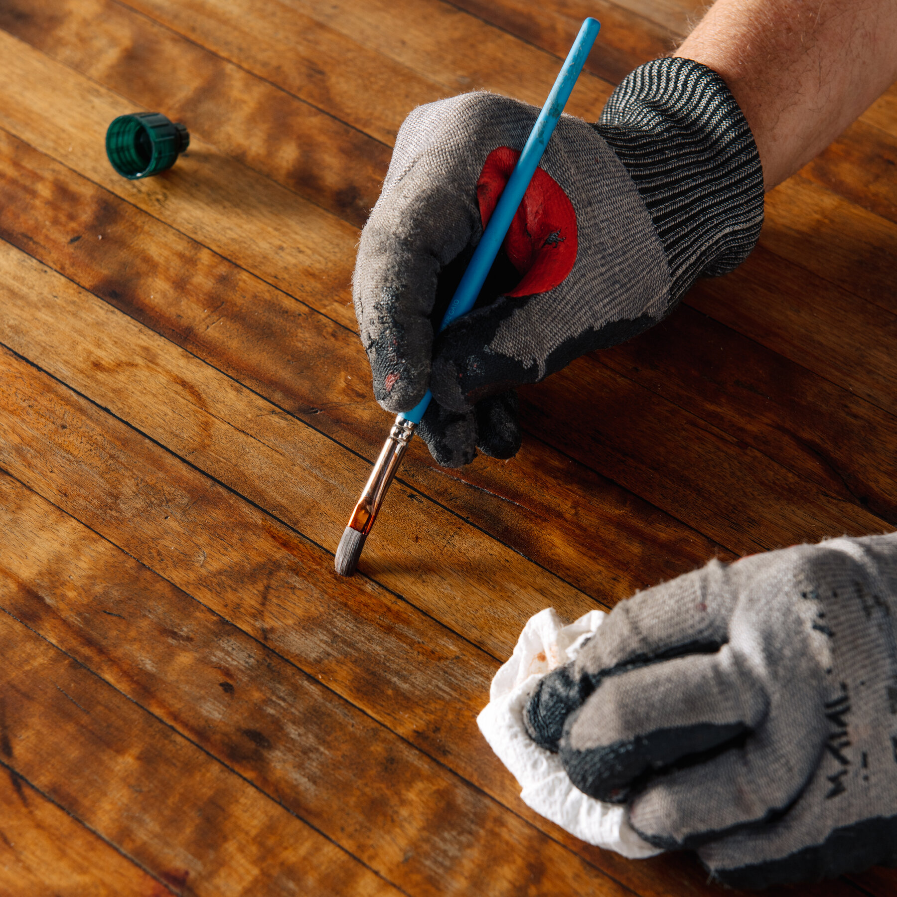

Recent Work
A glimpse into the workshop.


Five decades of precision craftsmanship — painting, renovation, RV revitalization, and vintage technical repair. Done right, every time.

For five decades, Tony Warden has dedicated his life to the pursuit of perfection. What started as a passion for vintage mechanics has evolved into a premier restoration and property renovation service.
At Warden's Workshop, we don't just fix things — we honor their history. Whether bringing a 100-year-old sewing machine back to life or transforming your living space, every project is handled with obsessive care and surgical precision.
Meet Tony WardenFour disciplines, one uncompromising standard.
Interior and exterior painting executed with surgical precision, custom trim, and premium materials.
Drywall, flooring, kitchen and bathroom updates — practical improvements with lasting quality.
From structural leak repair to full interior remodeling, we bring your mobile home back to life.
Specializing in the delicate restoration of vintage sewing machines and antique structural repairs.
A glimpse into the workshop.
"Tony's attention to detail is unmatched. He restored our vintage sewing machine that had been in the family for three generations. It runs like it's brand new."